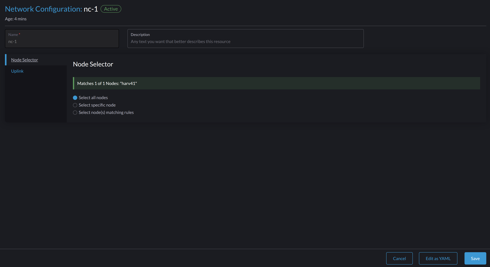

クラスタネットワーク
概念
クラスタネットワーク
以下の図は、データセンター（DC）トラフィックとアウトオブバンド（OOB）トラフィックを分離する典型的なネットワークアーキテクチャを説明しています。

SUSE Virtualization上のトラフィック分離された転送パスにあるデバイス、リンク、および設定の合計を、クラスタネットワークとして抽象化します。
上記のケースでは、2つのトラフィック分離された転送パスに対応する2つのクラスタネットワークがあります。
ネットワーク設定
SUSE Virtualizationホストのネットワークデバイスを含む仕様は異なる場合があります。そのような異種クラスタと互換性を持たせるために、ネットワーク設定を設計しました。
ネットワーク設定は特定のクラスタネットワークの下でのみ機能します。各ネットワーク設定は、均一なネットワーク仕様を持つホストのセットに対応します。したがって、非均一なホストのクラスタネットワークには複数のネットワーク設定が必要です。
VMネットワーク
VMネットワークは、ホストネットワークに接続する仮想マシン内のインターフェースです。ネットワーク構成と同様に、ビルトインの管理ネットワークを除くすべてのネットワークはクラスタネットワークの下にある必要があります。
SUSE Virtualizationは、1つのVMに複数のネットワークを追加することをサポートしています。あるホストでネットワークのクラスタネットワークが有効でない場合、このネットワークを所有するVMはそれらのホストにスケジュールされません。
ネットワークに関する詳細については、ネットワーク部分を参照してください。
クラスタネットワーク、ネットワーク設定、VMネットワークの関係
以下の図は、クラスタネットワーク、ネットワーク設定、およびVMネットワークの関係を示しています。

すべての`Network Configs`と`VM Networks`は、クラスタネットワークの下にグループ化されています。
-
各ホストには、ネットワーク仕様に基づいてホストを分類するためのラベルを割り当てることができます。
-
ノードセレクターを使用して、各ホストグループにネットワーク設定を追加できます。
例えば、上の図では、`ClusterNetwork-A`のホストは次のように3つのグループに分けられています：
-
最初のグループには、`network-config-A`に対応するhost0が含まれています。
-
2番目のグループには、`network-config-B`に対応するhost1とhost2が含まれています。
-
3番目のグループには、関連するネットワーク設定を持たない残りのホスト（host3、host4、host5）が含まれており、したがって`ClusterNetwork-A`には属しません。
クラスタネットワークは、ネットワーク設定にカバーされているホストでのみ有効です。特定のクラスタネットワークの下で`VM network`を使用しているVMは、クラスタネットワークがアクティブなホストでのみスケジュールできます。
上の図では、次のことがわかります：
-
`ClusterNetwork-A`はhost0、host1、host2でアクティブです。`VM0`は`VM-network-A`を使用しているため、これらのホストのいずれかでスケジュールできます。
-
`VM1`は`VM-network-B`と`VM-network-C`の両方を使用しているため、`ClusterNetwork-A`と`ClusterNetwork-B`の両方がアクティブなhost2でのみスケジュールできます。
-
VM0、VM1、および`VM2`は、2つのクラスタネットワークが非アクティブなhost3では実行できません。
全体として、この図は、クラスタネットワーク、ネットワーク構成、およびVMネットワーク間の関係を明確に視覚化し、ホスト上のVMスケジューリングにどのように影響するかを示しています。
クラスタネットワークの詳細
クラスタネットワークは、SUSE Virtualizationクラスタ内のネットワークトラフィックの送信のためのトラフィック分離された転送パスです。
SUSE Virtualizationクラスタが展開されると、自動的に`mgmt`というクラスタネットワークが作成されます。仮想マシン トラフィック専用のカスタムクラスタネットワークを作成することもできます。
ビルトインクラスタネットワーク
SUSE Virtualizationクラスタが展開されると、クラスタ間通信のために`mgmt`という名前のクラスタネットワークが自動的に作成されます。`mgmt`は、各SUSE Virtualizationホストが管理NICで接続する外部インフラストラクチャネットワークと同じブリッジ、ボンド、NICで構成されています。この設計により、`mgmt`はクラスタ管理の目的で外部インフラストラクチャネットワークから仮想マシンにアクセスできるようになります。
`mgmt`はネットワーク構成を必要とせず、すべてのホストで常に有効です。`mgmt`を無効にしたり削除したりすることはできません。
|
SUSE Virtualizationのv1.5.xおよびそれ以前のバージョンでは、全VLAN ID範囲（2から4094）が`mgmt`インターフェースに割り当てられていました。しかし、これは特定のネットワークカードでサポートされているVLANの上限を超えたため、ハードウェアVLANオフロードが正しく機能しなくなりました。 詳細については、 問題 #7650を参照してください。 |
v1.6.0以降、インストール時に提供されたプライマリVLAN IDのみが`mgmt-br`ブリッジおよび`mgmt-bo`インターフェースに自動的に追加されます。インストールが完了した後にセカンダリVLANインターフェースを追加することができます。
最初のクラスタノードのインストール中に、install.management_interface設定を使用して`mgmt`のMTU値を構成できます。`mtu`フィールドのデフォルト値は`1500`であり、これは通常`mgmt`が使用するものです。ただし、`0`または`1500`以外のMTU値を指定する場合、クラスタのデプロイ後に対応する注釈を追加する必要があります。
|
セカンダリVLANインターフェースを追加
-
`bond-mgmt`および`bridge-mgmt`接続プロファイルの現在のVLAN設定を確認してください。
例（プライマリVLAN IDが2017の場合）：
$ nmcli -f bridge-port.vlans con show bond-mgmt bridge-port.vlans: 1 pvid untagged, 2017 $ nmcli -f bridge.vlans con show bridge-mgmt bridge.vlans: 2017 -
`bond-mgmt`と`bridge-mgmt`の接続プロファイルを更新して、セカンダリVLAN IDを追加してください。
例（プライマリVLAN IDが2017で、セカンダリVLAN IDが2018の場合）：
$ nmcli con modify bond-mgmt bridge-port.vlans '1 pvid untagged, 2017, 2018' $ nmcli con modify bridge-mgmt bridge.vlans 2017,2018 -
変更を適用するために各ノードを再起動してください。
インストール後に`mgmt`に非デフォルトのMTU値を注釈してください。
install.management_interface設定の`mtu`フィールドに`0`または`1500`以外の値を指定した場合は、この値を`mgmt` `clusternetwork`オブジェクトに注釈する必要があります。注釈がない場合、作成されたすべてのVMネットワークは、指定した値を自動的に継承するのではなく、デフォルトのMTU値`1500`を使用します。
例
$ kubectl annotate clusternetwork mgmt network.harvesterhci.io/uplink-mtu="9000"
|
次のことを確認する必要があります：
|
インストール後に`mgmt`のMTU値を変更してください。
-
`mgmt`ネットワークに接続されているすべての仮想マシンを停止してください。
-
（オプション）`mgmt`を使用していて有効になっている場合は、ストレージネットワークを無効にしてください。
-
bond-mgmt、bridge-mgmt、および`vlan-mgmt`（VLANを使用している場合）の接続プロファイルのMTU値を変更してください。例:
$ nmcli con modify bond-mgmt 802-3-ethernet.mtu 9000 $ nmcli con modify bridge-mgmt 802-3-ethernet.mtu 9000 $ nmcli con modify vlan-mgmt 802-3-ethernet.mtu 9000 $ nmcli device reapply mgmt-bo $ nmcli device reapply mgmt-br -
`ip link`コマンドを使用してMTU値を確認してください。
-
新しいMTU値で、
mgmt`clusternetwork`オブジェクトに注釈を追加してください。例:
$ kubectl annotate clusternetwork mgmt network.harvesterhci.io/uplink-mtu="9000"`mgmt`に接続されているすべてのVMネットワークは、新しいMTU値を自動的に継承します。
-
（オプション）MTU値を変更する前に無効にしたストレージネットワークを有効にしてください。
-
`mgmt`に接続されているすべての仮想マシンを起動してください。
-
仮想マシンのワークロードが正常に実行されていることを確認してください。
カスタムクラスタネットワーク
各ホストに複数のネットワークインタフェースが接続されている場合、トラフィックの分離を改善するためにカスタムクラスタネットワークを作成できます。各クラスタネットワークには、定義されたスコープとボンディングモードを持つネットワーク構成が少なくとも1つ必要です。
|
witness nodeは一般的にカスタムクラスタネットワークには関与しません。 |
設定
新しいクラスタネットワークを作成する
|
クラスタのメンテナンスを簡素化するために、各ノードまたはノードのグループごとに1つのネットワーク構成を作成してください。専用のネットワーク構成がない場合、特定のメンテナンスタスク（たとえば、古いNICを異なるスロットのNICに交換するなど）を実行するには、影響を受ける仮想マシンを停止および/または移行してからネットワーク構成を更新する必要があります。 |
-
ハードウェア要件が満たされていることを確認してください。
-
*ネットワーク → クラスタネットワーク/構成*に移動し、次に*作成*をクリックします。
-
クラスタネットワークの名前を指定してください。

-
*クラスタネットワーク/構成*画面で、作成したクラスタネットワークの*ネットワーク構成を作成*ボタンをクリックします。

-
*ネットワーク構成:作成*画面で、構成の名前を指定してください。
-
*ノードセレクター*タブで、この特定のネットワーク構成のスコープを定義する方法を選択してください。

-
*すべてのノードを選択*する方法は、すべてのノードがこの特定のカスタムクラスタネットワークに対して正確に同じ専用NICを使用している場合にのみ機能します。他の状況（たとえば、クラスタにwitness nodeがある場合）では、残りの方法のいずれかを選択する必要があります。
-
選択した方法でカバーされていないノードに設定を適用したい場合は、別のネットワーク構成を作成する必要があります。
-
-
*アップリンク*タブで、次の設定を構成してください:
-
NICs:リストには、選択されたすべてのノードに共通するNICが含まれています。選択できないNICは、1つ以上のノードで利用できず、設定する必要があります。トラブルシューティングが完了したら、画面を更新し、NICが選択できることを確認してください。
-
ボンドオプション:デフォルトのボンディングモードは`active-backup`です。
-
属性:カスタムクラスターネットワークのすべてのネットワーク構成で同じMTUを使用する必要があります。MTUを指定しない場合、デフォルト値`1500`が使用されます。SUSE Virtualizationウェブフックは、新しいネットワーク構成のMTUが既存のネットワーク構成のMTUと一致しない場合、拒否します。

ボンドインタフェースに接続された物理スイッチは、トランクポートとして設定する必要があります。これらのポートは、タグ付きトラフィックを受け入れ、VMネットワークで使用されるVLAN IDでタグ付けされたトラフィックを送信する必要があります。
-
-
［保存］をクリックします。
ネットワーク構成を変更する
既存のネットワーク構成の変更は、SUSE Virtualization仮想マシンやワークロード、スイッチやルーターなどの外部デバイスに影響を与える可能性があります。詳細については、ネットワークトポロジーを参照してください。
|
ネットワーク構成を変更する前に、影響を受けるすべての仮想マシンを停止する必要があります。 |
以下のセクションでは、ネットワーク構成のMTUを変更するために実行する必要がある手順を概説します。これらのセクションで使用されるサンプルクラスターネットワークには、MTU値`1500`で構築された`cn-data`があり、`9000`に変更することを意図しています。

一般的な変更点
-
ターゲットクラスターネットワークとネットワーク構成を特定してください。
次の例では、クラスターネットワークは`cn-data`で、ネットワーク構成は`nc-1`です。

-
*⋮ → 設定を編集*を選択し、関連するフィールドを変更してください。
-
*ノードセレクター*タブ：

-
*アップリンク*タブ：

カスタムクラスターネットワークのすべてのネットワーク構成で、*ボンドオプション*と*属性*フィールドに同じ値を使用する必要があります。
-
-
［保存］をクリックします。
ストレージネットワークが接続されていないネットワーク構成のMTUを変更します。
このシナリオでは、ストレージネットワーク設定はターゲットクラスターネットワークに対して有効でも接続されてもいません。
|
MTUを変更する必要がある場合は、次の手順を実行してください：
-
ターゲットクラスターネットワークに接続されているすべての仮想マシンを停止してください。
仮想マシンネットワークと、使用した可能性のあるセカンダリネットワークを使用して確認できます。接続されている仮想マシンがまだ実行中の間はMTUを変更しないでください。
-
ターゲットクラスターネットワークのネットワーク構成を確認してください。
複数のネットワーク構成が存在する場合は、それぞれのノードセレクターを記録し、1つだけが残るまで構成を削除してください。
-
残りのネットワーク構成のMTUを変更してください。
ピアの外部スイッチまたはルーターのMTUも変更する必要があります。
-
Linuxの`ip link`コマンドを使用して、MTUが変更されたことを確認してください。
ネットワーク構成が複数のSUSE Virtualizationノードを選択している場合は、各ノードでコマンドを実行してください。
出力には、関連する`*-br`デバイスの新しいMTUと状態`UP`が表示される必要があります。次の例では、デバイスは`cn-data-br`で、新しいMTUは`9000`です。
Harvester node $ ip link show dev cn-data-br |new MTU| |state UP| 3: cn-data-br: <BROADCAST,MULTICAST,UP,LOWER_UP> mtu 9000 qdisc noqueue state UP mode DEFAULT group default qlen 1000 link/ether 52:54:00:6e:5c:2a brd ff:ff:ff:ff:ff:ff状態が`UNKNOWN`の場合、SUSE Virtualizationおよび外部スイッチまたはルーターのMTU値が一致しない可能性があります。
-
SUSE Virtualizationノードで新しいMTUをテストするには、`ping`などのコマンドを使用してください。
新しいMTUを持つSUSE Virtualizationノードまたは外部IPを持つノードにメッセージを送信する必要があります。
次の例では、ネットワークは`cn-data`、CIDRは`192.168.100.0/24`、ゲートウェイは`192.168.100.1`です。
-
ブリッジデバイスにIP`192.168.100.100`を設定してください。
$ ip addr add dev cn-data-br 192.168.100.100/24 -
ゲートウェイ経由で宛先IP（例：
8.8.8.8）のルートを追加してください。$ ip route add 8.8.8.8 via 192.168.100.1 dev cn-data-br -
新しいIP`192.168.100.100`から宛先IPにPingを送信してください。
$ ping 8.8.8.8 -I 192.168.100.100 PING 8.8.8.8 (8.8.8.8) from 192.168.100.100 : 56(84) bytes of data. 64 bytes from 8.8.8.8: icmp_seq=1 ttl=59 time=8.52 ms 64 bytes from 8.8.8.8: icmp_seq=2 ttl=59 time=8.90 ms ... -
新しいMTUを検証するために、異なるパケットサイズで宛先IPにPingを送信してください。
$ ping 8.8.8.8 -s 8800 -I 192.168.100.100 PING 8.8.8.8 (8.8.8.8) from 192.168.100.100 : 8800(8828) bytes of data The param `-s` specify the ping packet size, which can test if the new MTU really works -
テストに使用したルートを削除してください。
$ ip route delete 8.8.8.8 via 192.168.100.1 dev cn-data-br -
テストに使用したIPを削除してください。
$ ip addr delete 192.168.100.100/24 dev cn-data-br
-
-
削除したネットワーク設定を再度追加してください。
各ネットワーク設定でMTUを変更し、新しいMTUが適用されたことを確認する必要があります。SUSE Virtualizationウェブフックは、新しいネットワーク設定のMTUが既存のネットワーク設定のMTUと一致しない場合、拒否します。
ターゲットクラスターネットワークに接続されているすべてのVMネットワークは、自動的に新しいMTU値を継承します。
次の例では、ネットワーク名は`vm100`です。MTU値が更新されたことを確認するには、コマンド`kubectl get NetworkAttachmentDefinition.k8s.cni.cncf.io vm100 -oyaml`を実行してください。
+
apiVersion: k8s.cni.cncf.io/v1
kind: NetworkAttachmentDefinition
metadata:
annotations:
network.harvesterhci.io/route: '{"mode":"auto","serverIPAddr":"","cidr":"","gateway":""}'
creationTimestamp: '2025-04-25T10:21:01Z'
finalizers:
- wrangler.cattle.io/harvester-network-nad-controller
- wrangler.cattle.io/harvester-network-manager-nad-controller
generation: 1
labels:
network.harvesterhci.io/clusternetwork: cn-data
network.harvesterhci.io/ready: 'true'
network.harvesterhci.io/type: L2VlanNetwork
network.harvesterhci.io/vlan-id: '100'
name: vm100
namespace: default
resourceVersion: '1525839'
uid: 8dacf415-ce90-414a-a11b-48f041d46b42
spec:
config: >-
{"cniVersion":"0.3.1","name":"vm100","type":"bridge","bridge":"cn-data-br","promiscMode":true,"vlan":100,"ipam":{},"mtu":9000} // MTU has been updated-
ターゲットクラスターネットワークに接続されているすべての仮想マシンを起動してください。
仮想マシンは新しいMTUを継承しているはずです。ゲストオペレーティングシステムで、コマンド`ip link`と`ping 8.8.8.8 -s 8800`を使用してこれを確認できます。
-
仮想マシンのワークロードが正常に実行されていることを確認してください。
|
SUSE Virtualizationは、MTU値が変更された際に発生する可能性のある損害やデータの損失について責任を負いません。 |
接続されたストレージネットワークを持つネットワーク設定のMTUを変更してください。
このシナリオでは、ストレージネットワーク設定が有効で、ターゲットクラスターネットワークに接続されています。
ストレージネットワークは`driver.longhorn.io`によって使用され、これはSUSE VirtualizationのデフォルトCSIドライバーです。SUSE Storageはルートボリュームのプロビジョニングを担当しているため、MTUの変更はすべての仮想マシンに影響を与えます。
|
MTUを変更する必要がある場合は、次の手順を実行してください：
-
すべての仮想マシンを停止してください。
-
ストレージネットワーク設定を無効にしてください。
設定が無効になるまでしばらく時間を置き、その後変更が適用されたことを確認してください。
-
ターゲットクラスターネットワークのネットワーク設定を確認してください。
複数のネットワーク設定が存在する場合は、それぞれのノードセレクターを記録し、1つだけが残るまで設定を削除してください。
-
残りのネットワーク設定のMTUを変更してください。
ピアの外部スイッチまたはルーターのMTUも変更する必要があります。
-
コマンド`ip link`を使用してMTUが変更されたことを確認してください。
ネットワーク構成が複数のSUSE Virtualizationノードを選択している場合は、各ノードでコマンドを実行してください。
出力には、関連する`*-br`デバイスの新しいMTUと状態`UP`が表示される必要があります。次の例では、デバイスは`cn-data-br`で、新しいMTUは`9000`です。
Harvester node $ ip link show dev cn-data-br |new MTU| |state UP| 3: cn-data-br: <BROADCAST,MULTICAST,UP,LOWER_UP> mtu 9000 qdisc noqueue state UP mode DEFAULT group default qlen 1000 link/ether 52:54:00:6e:5c:2a brd ff:ff:ff:ff:ff:ff状態が`UNKNOWN`の場合、SUSE Virtualizationおよび外部スイッチまたはルーターのMTU値が一致しない可能性があります。
-
SUSE Virtualizationノードで新しいMTUをテストするには、`ping`などのコマンドを使用してください。
新しいMTUを持つSUSE Virtualizationノードまたは外部IPを持つノードにメッセージを送信する必要があります。
次の例では、ネットワークは`cn-data`、CIDRは`192.168.100.0/24`、ゲートウェイは`192.168.100.1`です。
-
ブリッジデバイスにIP`192.168.100.100`を設定してください。
$ ip addr add dev cn-data-br 192.168.100.100/24 -
ゲートウェイ経由で宛先IP（例：
8.8.8.8）のルートを追加してください。$ ip route add 8.8.8.8 via 192.168.100.1 dev cn-data-br -
新しいIP`192.168.100.100`から宛先IPにPingを送信してください。
$ ping 8.8.8.8 -I 192.168.100.100 PING 8.8.8.8 (8.8.8.8) from 192.168.100.100 : 56(84) bytes of data. 64 bytes from 8.8.8.8: icmp_seq=1 ttl=59 time=8.52 ms 64 bytes from 8.8.8.8: icmp_seq=2 ttl=59 time=8.90 ms ... -
新しいMTUを検証するために、異なるパケットサイズで宛先IPにPingを送信してください。
$ ping 8.8.8.8 -s 8800 -I 192.168.100.100 PING 8.8.8.8 (8.8.8.8) from 192.168.100.100 : 8800(8828) bytes of data The param `-s` specify the ping packet size, which can test if the new MTU really works -
テストに使用したルートを削除してください。
$ ip route delete 8.8.8.8 via 192.168.100.1 dev cn-data-br -
テストに使用したIPを削除してください。
$ ip addr delete 192.168.100.100/24 dev cn-data-br
-
-
削除したネットワーク設定を再追加してください。
各ネットワーク構成でMTUを変更し、新しいMTUが適用されたことを確認する必要があります。SUSE Virtualizationウェブフックは、新しいネットワーク構成のMTUが既存のネットワーク構成のMTUと一致しない場合、拒否します。
-
ストレージネットワーク設定を有効にし、前提条件が満たされていることを確認してください。
-
設定が有効になるまでしばらく時間を置き、その後変更が適用されたことを確認してください。`storagenetwork`は新しいMTU値で動作しています。
ターゲットクラスターネットワークに接続されているすべてのVMネットワークは、自動的に新しいMTU値を継承します。
+ 次の例では、ネットワーク名は`vm100`です。MTU値が更新されたことを確認するには、コマンド`kubectl get NetworkAttachmentDefinition.k8s.cni.cncf.io vm100 -oyaml`を実行してください。
+
apiVersion: k8s.cni.cncf.io/v1
kind:NetworkAttachmentDefinition +
metadata: +
annotations: +
network.harvesterhci.io/route: '{"mode":"auto","serverIPAddr":"","cidr":"","gateway":""}' +
creationTimestamp:'2025-04-25T10:21:01Z'
finalizers:
- wrangler.cattle.io/harvester-network-nad-controller
- wrangler.cattle.io/harvester-network-manager-nad-controller
generation:1
labels:
network.harvesterhci.io/clusternetwork: cn-data
network.harvesterhci.io/ready: 'true'
network.harvesterhci.io/type:L2VlanNetwork
network.harvesterhci.io/vlan-id:'100'
name: vm100
namespace: default
resourceVersion:'1525839'
uid:8dacf415-ce90-414a-a11b-48f041d46b42
spec:
config: >-
{"cniVersion":"0.3.1","name":"vm100","type":"bridge","bridge":"cn-data-br","promiscMode":true,"vlan":100,"ipam":{},"mtu":9000} // MTU has been updated
-
ターゲットクラスターネットワークに接続されているすべての仮想マシンを起動してください。
仮想マシンは新しいMTUを継承しているはずです。ゲストオペレーティングシステムでLinux `ip link`コマンドと`ping 8.8.8.8 -s 8800`コマンドを使用してこれを確認できます。
-
仮想マシンのワークロードが正常に実行されていることを確認してください。
|
SUSE Virtualizationは、MTU値が変更された際に発生する可能性のある損害やデータの損失について責任を負いません。 |